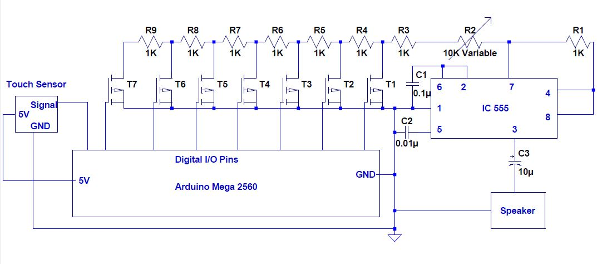
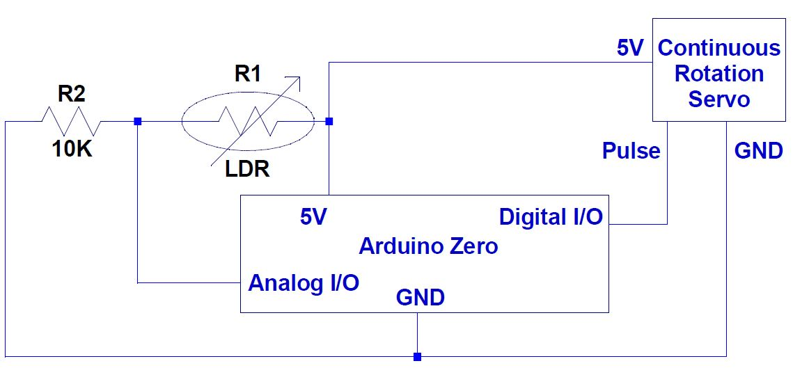

ABOUT THE PROJECT
The idea is to recreate a musical jam session with electromechanical instruments powered by microcontrollers. The resulting implementation is essentially a small-scale robotic system that emulates a band. Our jam band consists of a touch sensitive electronic piano that interacts with a light sensitive continuous rotation servo to create primitive music. The piano acts as the ‘strings’ component whereas an end effector (metallic fork) attached to the servo clinks against cups filled with water (to different levels) acts as a ‘percussion’ instrument.
COMPONENTS
| Component Name | Make/Type/Model | Quantity |
|---|---|---|
| Microcontroller/Development Board | Arduino Zero and Arduino Mega | 1 each |
| Light Dependent Resistor(LDR) | KE-10720 | 1 |
| Pull Down Resistor | Standard 10kOhm | 1 |
| MyDAQ(5V Power Source) | National Instruments | 2 |
| Continuous Rotation Micro Servo | FITEC FS90 | 1 |
| Breadboards | Standard Issue | 2 |
| Timer | IC555 | 1 |
| Mini Metal Speaker | SAdafruit 8 Ohm, 0.5W | 1 |
| Resistors | 1kOhm | 8 |
| Potentiometer | 10kOhm | 1 |
| Electrolytic Capacitor | 10 microFarad | 1 |
| Ceramic Capacitor | 0.1 microFarad | 1 |
| Ceramic Capacitor | 0.01 microFarad | 1 |
| Transistors | PMOSFET SUP53P06 | 7 |
| Capacitive Touch Sensor | Adafruit | 1 |
| Jumper Wires | Standard Issue | Variable |
WIRING DIAGRAM



WORKING
The electronic piano consists of an IC 555 timer that acts as an astable multivibrator to generate notes of different frequencies. The circuit is controlled by an Arduino Mega microcontroller. The piano can start playing in one of two ways – through a web interface by clicking buttons corresponding to a note or pre-coded tunes, or through tactile feedback from a capacitive touch sensor. It outputs its sound through a mini metal speaker. The Arduino Mega communicates with the Arduino Zero that controls the light dependent servo to ensure that the percussion instrument starts playing at the same time that the piano does. Varying the ambient light received by a light dependent resistor (by shielding with the hand), we can rotate the servo at different rates. The servo is connected to a metallic fork that acts as an end effector. This fork is allowed to clink against a circular arrangement of 7 cups with different water levels (to achieve sounds of different frequencies). As a consequence of this control flow, we have an Arduino based robotic system that emulates a musical jam session.
VIDEO
LINKS AND CONTACT
Rehan Shah rehankshah14@gmail.com
Shounak Roy shounakroy240396@gmail.com
Haoyang Ye yes1418@g.ucla.edu